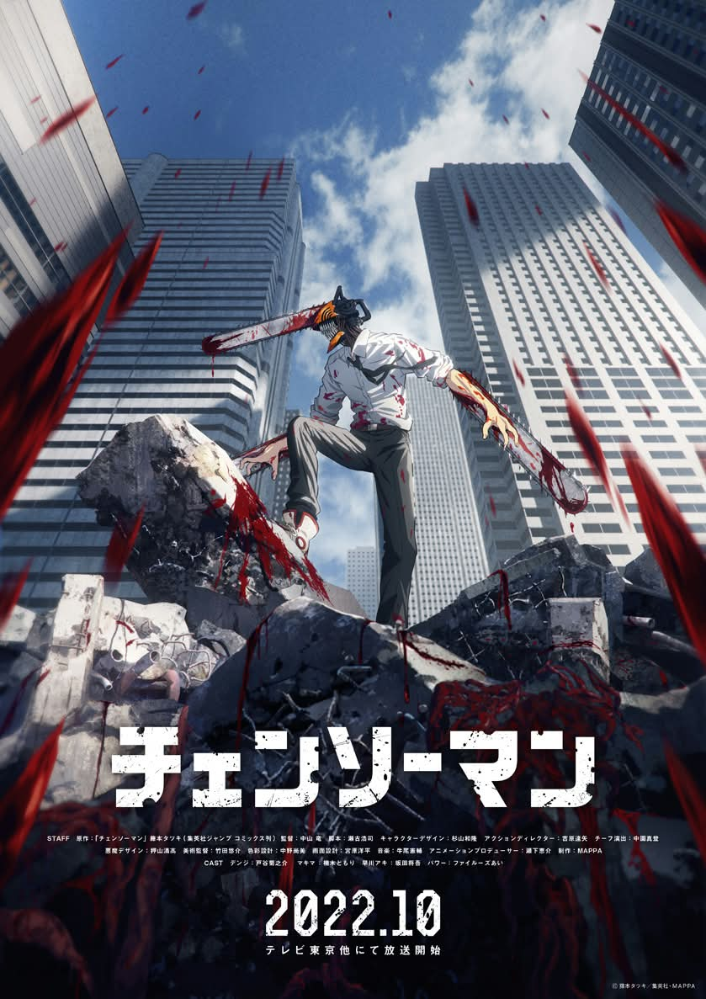

UNOFFICIAL FAN STORY · CHAPTER 01
Chainsaw Man
A broke young worker takes a strange night job and finds that the city’s oddest problems are easier to face with honest friends.
Chapter One: A New Beginning
Denji’s new job promised easy money: deliver a sealed toolbox to a shop that only opened after midnight. The streets were quiet, and every neon sign seemed to point in a different direction.
At the shop, the owner explained that the toolbox contained a noisy little machine used to clear blocked drains. Unfortunately, the machine had started rattling so loudly that the whole neighborhood thought something supernatural was loose underground.
Denji called two friends, and together they traced the sound to a pipe packed with leaves and bottle caps. They cleared the blockage, fixed the drain, and helped the shop reopen.
The pay was modest, but the owner gave them dinner. Denji decided that a small honest job could feel like a victory when you did not have to handle it alone.
This is an unofficial, original fan-made story and is not affiliated with the official creators or publishers.